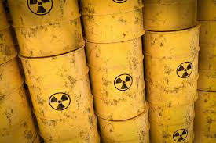

Nuclear Waste and Solutions
Nuclear waste contains extreme amount of radiation, that have of high chance of causing cancer if you are exposed to an extreme amount.
Some are contained in buildings with water control as show in the introduction, some are contained anti-radiation containers.
This is an image of nuclear waste in containers and nuclear waste that is in a pool with cooling systems.

Radiation lasts for hundreds of thousands of years, so it might still linger around even when the human species extincts.
To make sure that the radiation does no seep out, it requires maintence by humans.
But we won't be here forever so there must be a better way to take care of them.
Sweden is currently building an underground nuclear waste sight. Once radiation is put in, it will be sealed off.
Its so far deep down that the radiation won't affect the eart above, and once its sealed off, it will never be opened again.
But for future civilizations, they need to warn them about the dangers of that area.
Because there is a door that openes to this underground facility.
There would be extreme dangers if the door were to open.
So, they are also currently working on warnings.